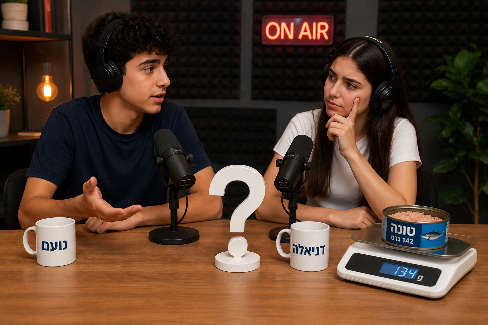
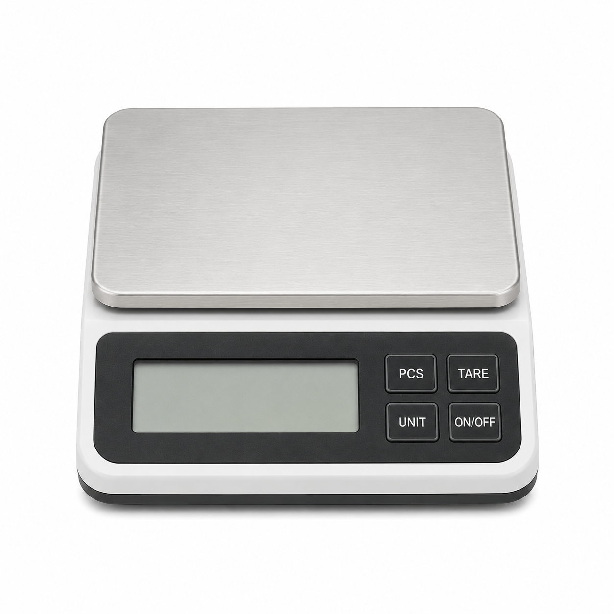
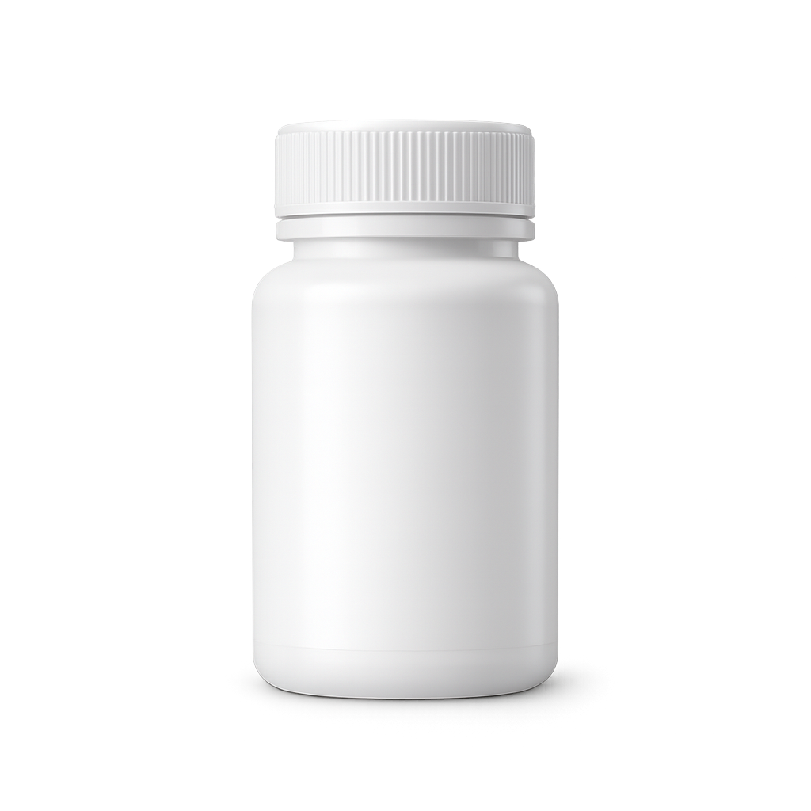
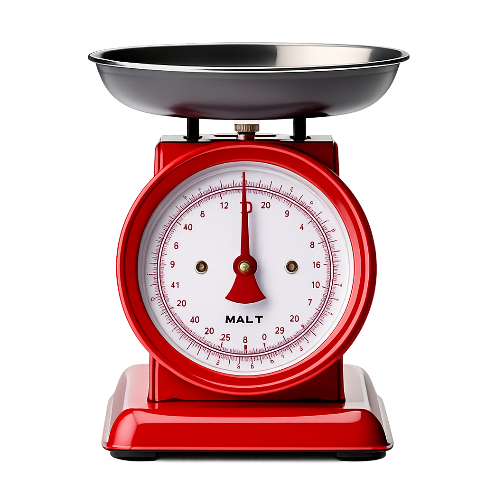
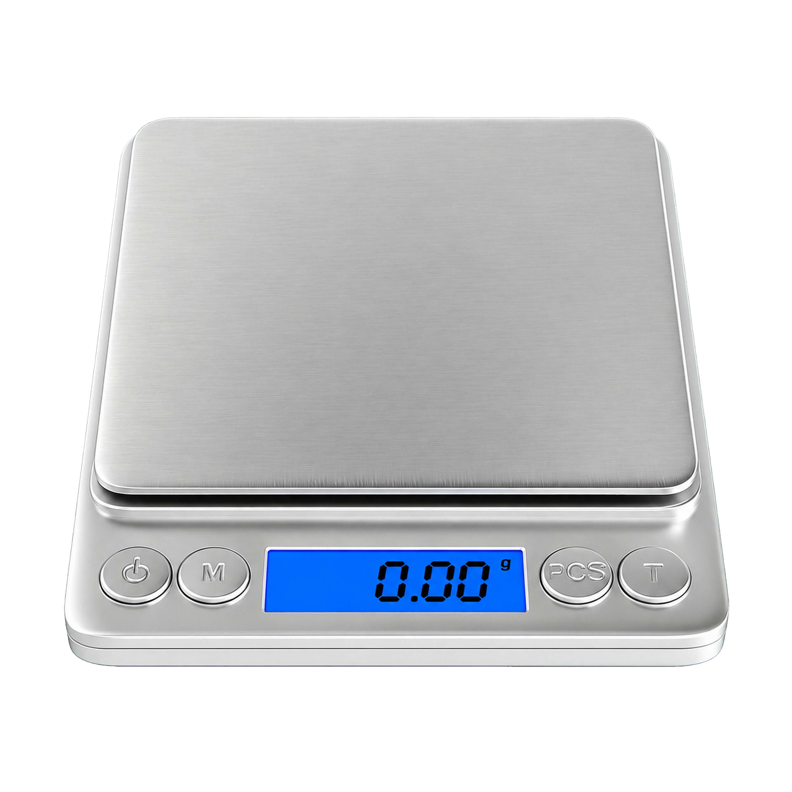
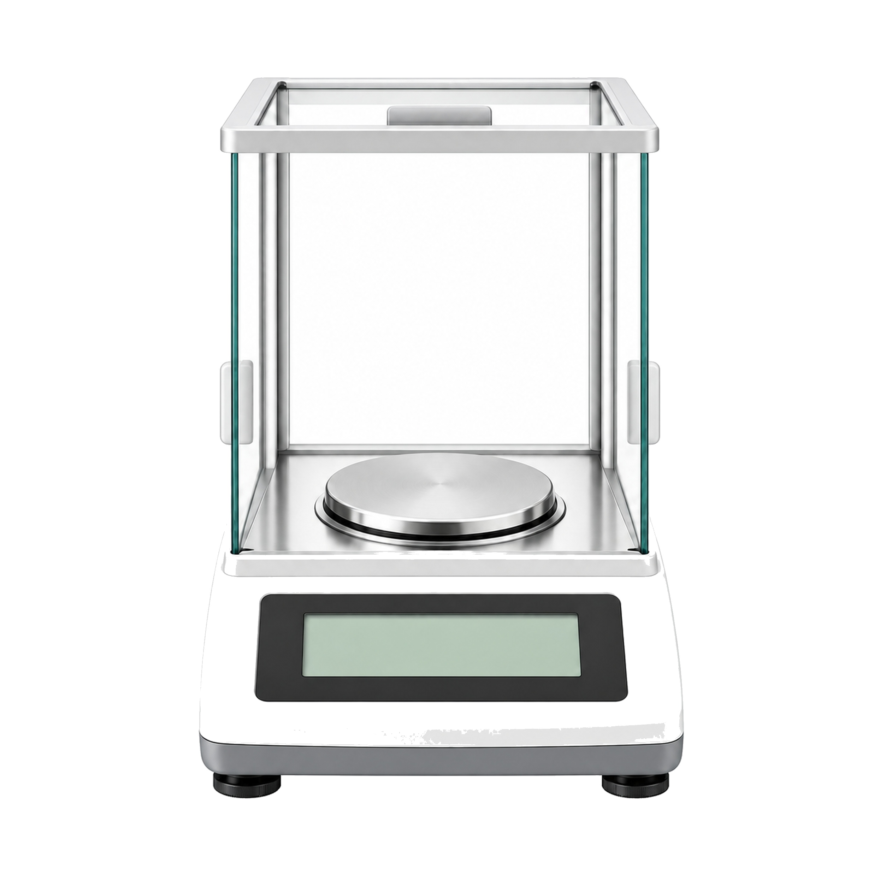
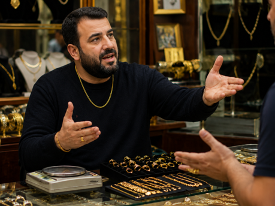
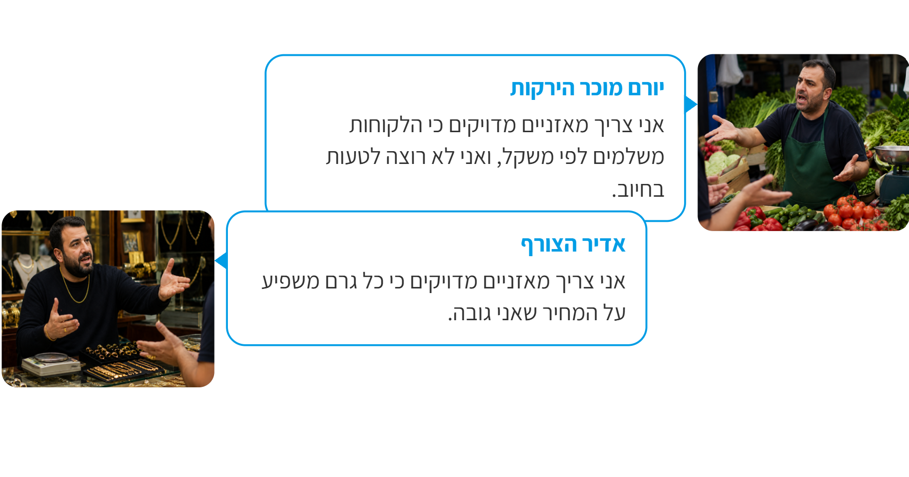
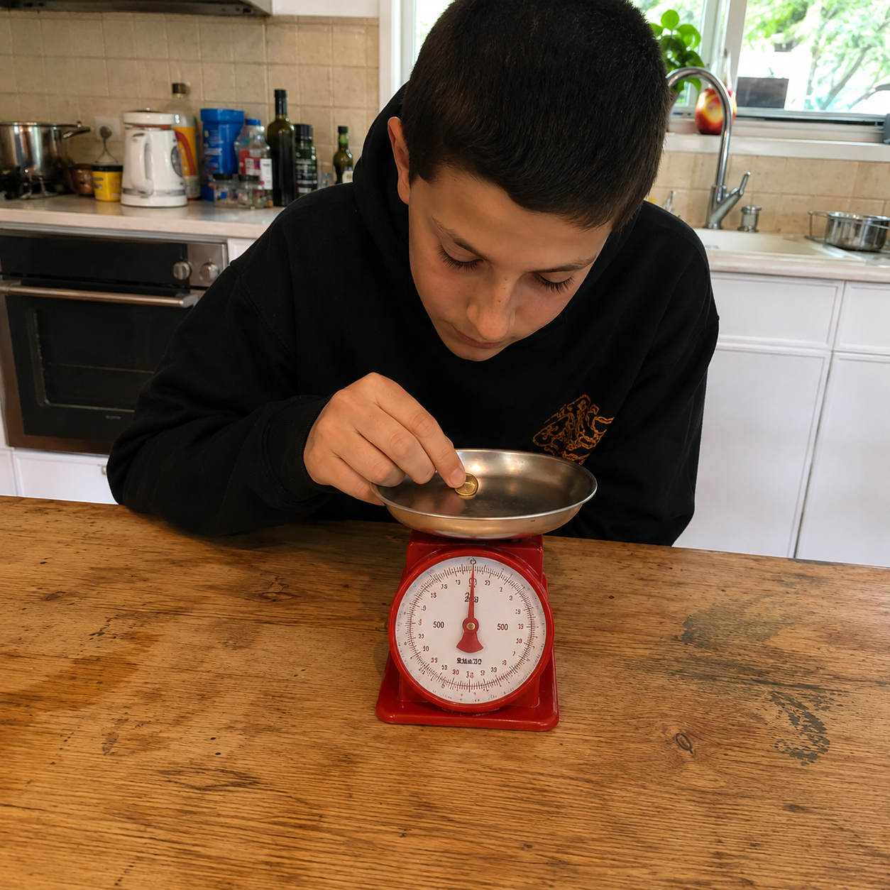

מי תלווה אותנו בלמידה?
בחרו דמות
האם 3 גרמים של טוּנָה שווים 12 מיליון דולר?
הקשיבו לפודקאסט של נועם ודניאלה וענו בעצמכם...

עזרו לנועם ודניאלה
האם לדעתכם חוסר של 8–3 גרם במוצר של 142 גרם הוא בעיה חמורה שדורשת קנס,
או סטייה הגיונית ומותרת?
תודה על המענה!
הקשיבו לחלק הבא של הפודקאסט וגלו מי צודק...
נו? התשובה שלכם הייתה נכונה?
מדידות בחיי היום יום
בחרו אחד משני התחומים הבאים כדי ללמוד:

תרופות

זהב


זהב
לפניכם שני סוגי מאזניים:
מאזניים רגילים ומאזניים רגישים במיוחד.
שימו את הזהב על כל אחד מהמאזניים ותעדו את הפער ביניהם.

תרופות
לפניכם שני סוגי מאזניים:
מאזניים רגילים ומאזניים רגישים במיוחד.
שימו את התרופה על כל אחד מהמאזניים ותעדו את הפער ביניהם.
מדידות בחיי היום יום
הקשיבו לפרק הבא בפודקאסט וגלו האם סטייה קטנה במדידה באמת יכולה לעשות הבדל גדול?

סטיית מדידה
נועם סיפר שגם המאזניים המדויקים ביותר אינם מושלמים לחלוטין.
מהי לדעתכם הדרך הטובה ביותר לצמצם את השפעתן של טעויות מדידה אקראיות?
שתי שאלות קלילות לחימום לפני שנתקדם

סטיית מדידה
גברת פיקל שקלה קופסאות שימורים במאזני המטבח וכתבה לעצמה ביומן:
"מסת הקופסה (עם השימורים שבתוכה) היא בדיוק 400 גרם".
באיזה סוג של קביעה מדעית השתמשה גברת פיקל?

שקלנו קופסת טונה 3 פעמים וקיבלנו את התוצאות הבאות:
| מדידה | תוצאה (בגרם) |
|---|---|
| 1 | 141 |
| 2 | 144 |
| 3 | 141 |
השלימו את החסר מתוך מחסן המילים:
התוצאות שהוא 142 גרם, עוזרים לנו למזער את אי-הוודאות ולקבל נתונים אמינים.
סיימנו את שלב הלימוד, נעבור לתרגול הראשון ונענה על
6 שאלות
צריך לענות נכון על 4 שאלות לפחות.
אנחנו חלק מקבוצת מחקר בהודו המפתחת תוסף גדילה לצמח האורז שיוכל לעזור בצמצום רעב בהודו (בהצלחה!).
כדי להראות שהצמחים גדלים, במהלך המחקר נשקול צמחי אורז צעירים שקיבלו את התוסף וכאלה שלא ונשווה בין המדידות.
המדידות יתבצעו אחת לשבוע.
במחקר נצטרך להשתמש במאזניים המתאימים ביותר מבין האפשרויות:

מאזני מטבח
רמת דיוק: 1 גרם

מאזני מעבדה
רמת דיוק: 0.01 גרם (מאית גרם)

מאזניים אנליטיים מאזניים בעלי רמת דיוק גבוהה מאוד. לרוב יהיו בעלי תא זכוכית סגור בכדי שאוויר לא ישפיע על המדידה.
רמת דיוק: 0.001 גרם (מיליגרם)
סעיף א
מה המידע אותו עלינו לחפש בכדי לבחור במאזניים המתאימים?
סעיף ב
בספרות המדעית מצאנו שצמח אורז צעיר שוקל כ-5 גרם וצפוי לעלות במסה של כ-0.1 גרם בשבוע.
בחרו כעת את המאזניים המתאימים ביותר עבור הניסוי.
מאזני מטבח
רמת דיוק: 1 גרם
מאזני מעבדה
רמת דיוק: 0.01 גרם (מאית גרם)
מאזניים אנליטיים מאזניים בעלי רמת דיוק גבוהה מאוד. לרוב יהיו בעלי תא זכוכית סגור בכדי שאוויר לא ישפיע על המדידה.
רמת דיוק: 0.001 גרם (מיליגרם)
ניתוח המדידות – האם התוצאות אמינות?
הניסוי החל. הוספנו את התוסף לשתיל האורז. לאחר שבוע של טיפול,
מדדנו את השתיל 4 פעמים.
השלימו את הפסקה בעזרת מחסן המילים והמספרים:
| מספר חזרה על השקילה | התוצאה (בגרמים) |
|---|---|
| 1 | 5.09 |
| 2 | 5.11 |
| 3 | 5.90 |
| 4 | 5.12 |
מדידת מסה במבחן המציאות
לאחר שהצלחנו בפרויקט האורז, פנו אלינו כמה מפעלים וביקשו עזרה בבחירת מאזניים.
גררו את המוצר אל המאזניים המתאימים ביותר לשקילתו
מאזני מטבח
רמת דיוק: 1 גרם
מאזני מעבדה
רמת דיוק: 0.01 גרם
מאזניים אנליטיים
רמת דיוק: 0.001 גרם
זהב או עגבניות?
הסתובבתם בשוק ונתקלתם בויכוח בין שני בעלי עסקים:

יורם מוכר הירקות
אני צריך מאזניים מדויקים כי הלקוחות משלמים לפי משקל, ואני לא רוצה לטעות בחיוב.
אדיר הצורף
אני צריך מאזניים מדויקים כי כל גרם משפיע על המחיר שאני גובה.


הכריעו את הויכוח
מי באמת צריך את המשקל המדויק ביותר?

דן למד בשיעור מדעים על מדידות מדעיות. זה עניין אותו מאוד.
הוא החליט להמשיך לחקור את הנושא גם בבית ומדד שני פריטים:
- שרשרת זהב - משקלה האמיתי 2.3 גרם.
- חנוכייה עתיקה - משקלה האמיתי 150 גרם.
המדידה התבצעה על מאזני המטבח (דיוק של 1 גרם).
לאיזה פריט, ומדוע, תהיה טעות המדידה קריטית יותר?
רמז
האם מדידה אחת תמיד מספיקה כדי להיות בטוחים בתוצאה, או שכדאי לבדוק כמה פעמים לפני שמסיקים מסקנה?
רמז
שימו לב - האם הדיווח כולל מספר (400) ויחידת מידה רשמית (גרם), או רק תיאור כללי כמו "כבד" או "קל"?
רמז
שימו לב שלא הסתפקנו בשקילה אחת בלבד. מה עשינו כדי להגדיל את הביטחון בתוצאה?
רמז
עלינו לחפש מכשיר עם דיוק קטן יותר מהשינוי הקטן ביותר שנרצה למדוד.
רמז
הזכרו מהו גודל השינוי שעלינו למדוד.
רמז
האם אחת המדידות שונה מאוד מהאחרות?
רמז
חשבו מה עלינו לשקול בכל משימה, ומה יקרה אם תהיה טעות קטנה במדידה.
רמז
היכן טעות של עשירית גרם משמעותית יותר?
רמז
חשבו כמה אחוז ממשקל כל פריט מהווה גרם 1.
האם האחוז שווה או שונה בין הפריטים?